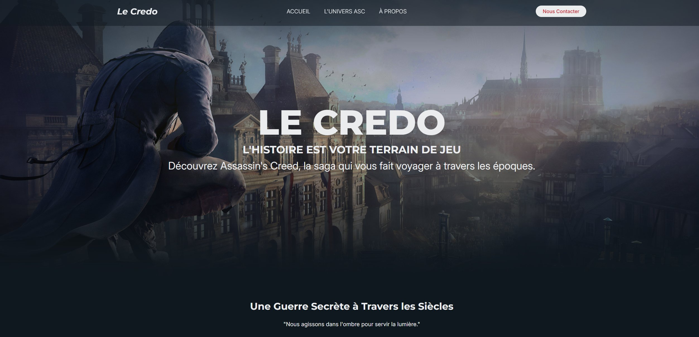
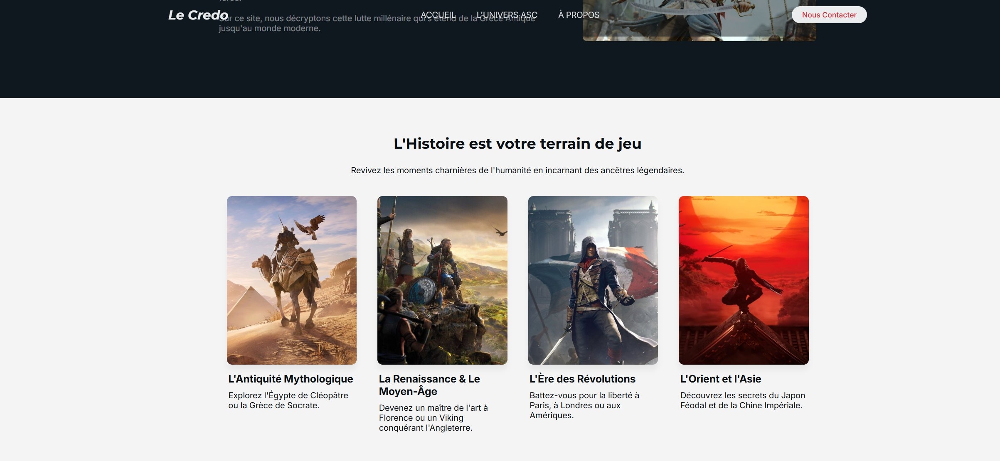
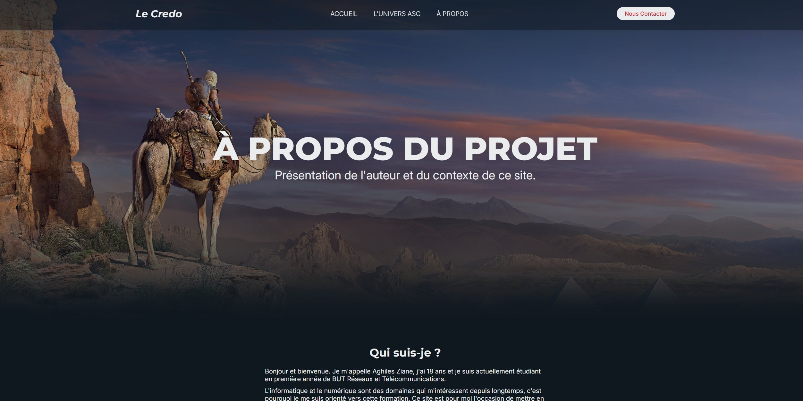
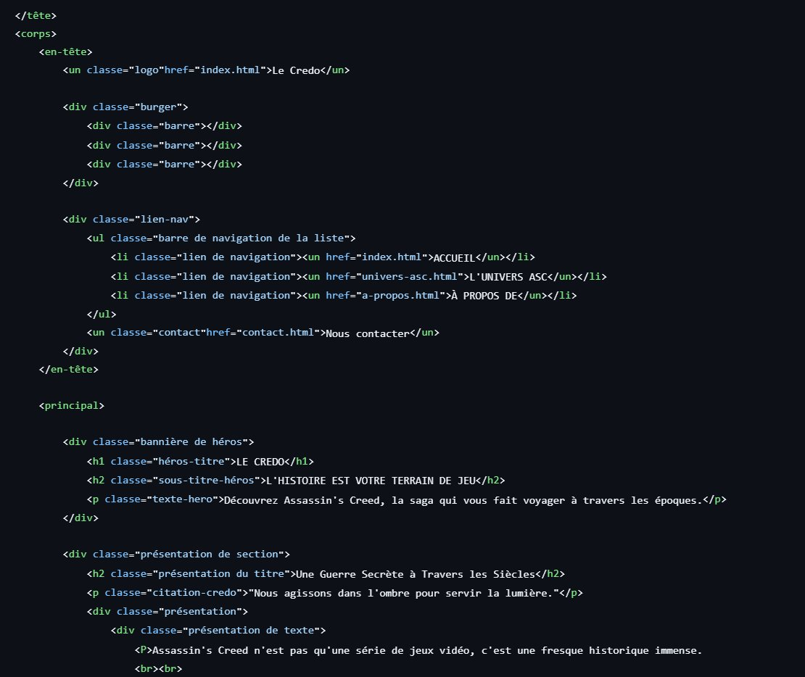

L'objectif de cette SAÉ était de créer un site web personnel pour se présenter sur Internet. J'ai choisi de réaliser un site thématique autour d'Assassin's Creed appelé « Le Credo », qui inclut aussi une page « À propos » où je me présente. Le site a été codé entièrement à la main en HTML et CSS, sans template ni générateur, et hébergé sur GitHub Pages.
Lien du site : ziane251.github.io/Projet-SAE-14




| Difficulté rencontrée | Ce que je ferais si c'était à refaire |
|---|---|
| Le responsive : le menu burger ne s'affichait pas bien sur la page « L'Univers ASC » et certaines sections passaient mal sur mobile. | Partir d'une approche mobile-first dès le départ au lieu de tout faire en desktop puis adapter après. Tester sur téléphone plus tôt dans le développement. |
Ce projet m'a permis de consolider mes bases en HTML/CSS et de découvrir le workflow complet d'un site web : de la conception du design au déploiement sur GitHub Pages en passant par le code et le responsive. Mon expérience en graphisme m'a aidé pour la partie visuelle, mais j'ai appris que rendre un site beau sur desktop ne suffit pas — il faut penser au mobile dès le début. C'est aussi la première fois que j'utilisais Git et GitHub pour héberger un projet. Je me positionne à un niveau satisfaisant : le site est en ligne, fonctionnel et visuellement abouti, mais le responsive reste à perfectionner.